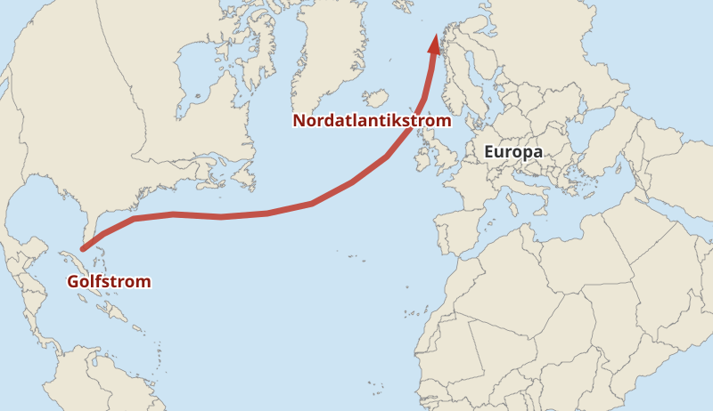

Medienübersicht
Alle Bilder, Audios und Videos dieser App mit ihrer Quelle und ihrer Lizenz.
Bilder

images/golfstrom.svgQuelle: eigene Karte nach Natural-Earth-Daten (naturalearthdata.com). Lizenz: gemeinfrei.Verwendet auf: Seeklima und Landklima

images/europa.svgQuelle: eigene Karte nach Natural-Earth-Daten (naturalearthdata.com). Lizenz: gemeinfrei.Verwendet auf: Klimazonen im Überblick, Typische Orte der Klimazonen